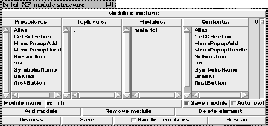

Calling this procedure pops up the module structure dialog box. This procedure gets no parameters. An XF generated program can be packed into one file, containing the complete code. It is also possible to split the code into several modules. This is done in this dialog box.

Figure: The procedure XFProcMiscModules
To add a new module, the new module name is entered, and the (Insert module) button is pressed. The current module is selected from the module list. The contents of that module are displayed in the right list. The order of the module contents can be changed by selecting a name, and changing its position with the slider right beside the list.
To add new elements (procedures and toplevels) to a module, a name is selected in one of the left lists. To remove an element from a module, the element is selected in the right list and the (Delete element) button is pressed. To remove a module, the module is selected in the left list, and the (Delete module) button is pressed.
If the contents of a module should be auto loadable, the checkbutton (Auto load) right beside the module name is toggled. This means that a tclIndex file is created, and the needed code for auto loading is created.
To restrict the saving to a subset of the modules, the checkbutton (Save module) right beside the module name can be toggled. If the checkbutton is deselected for a module, this module will not be saved. The current selection of modules to be saved can be stored to a local file named .xf-save-modules with the procedure XFProcOptionsSaveModules.
This dialog is also used to create templates. By clicking the (Handle Templates) button, the selected procedures and the widget path are written to a template that is created when the (Save) button is pressed.